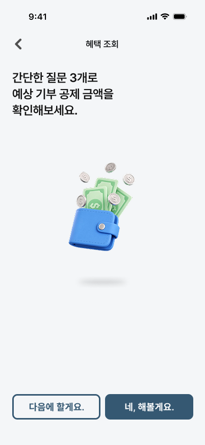
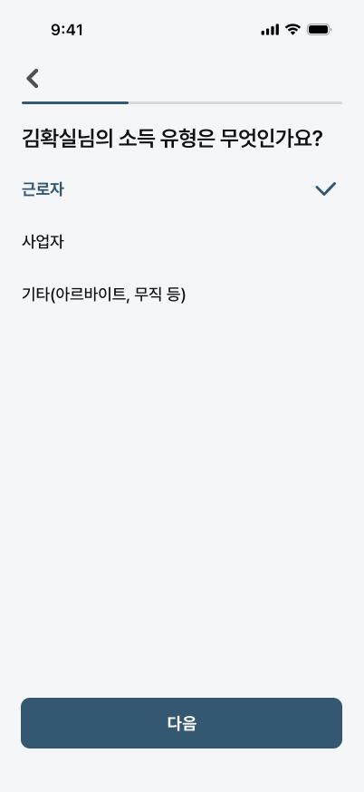
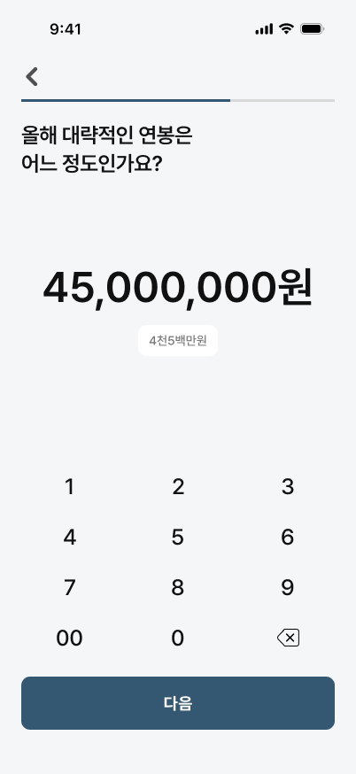
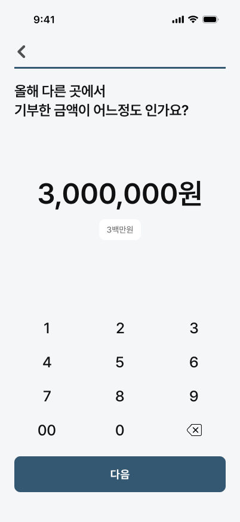

TAX DEDUCTION SCREENS
질문으로 내 세액공제 혜택을 확인할 수 있습니다.
간단한 질문에 답하면 예상 세액공제 금액을 바로 확인할 수 있습니다.
인트로 화면
복잡한 서류 없이,3가지 질문만으로
내 절세 혜택을 미리 알 수 있어요
내 절세 혜택을 미리 알 수 있어요

소득 유형 선택
근로자, 사업자, 기타 중 본인의 소득 유형을 선택해요.
유형에 따라 적용되는 공제 방식이 달라져요
유형에 따라 적용되는 공제 방식이 달라져요

연봉 입력
본인의 연간 소득을 입력해요.
소득에 따라 공제율과 환급액이 달라져요
소득에 따라 공제율과 환급액이 달라져요

기부금 입력
올해 다른 곳에서 기부한 금액을 입력해요.
기존 기부 내역까지 합산해 계산해요
기존 기부 내역까지 합산해 계산해요

예상 절세액 결과
입력한 정보를 바탕으로
올해 돌려받을 금액을 한눈에 확인해요
올해 돌려받을 금액을 한눈에 확인해요